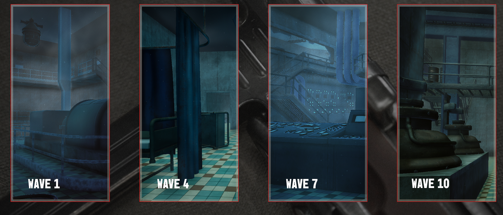
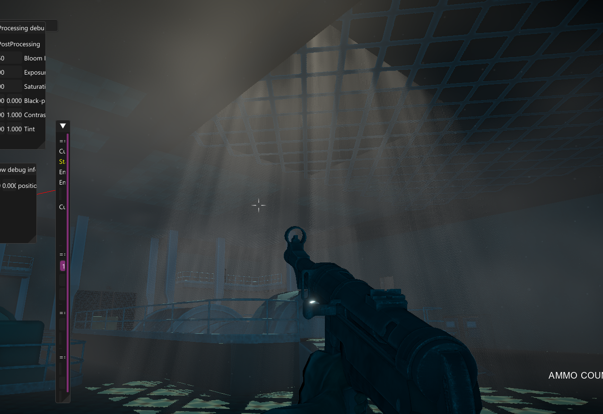
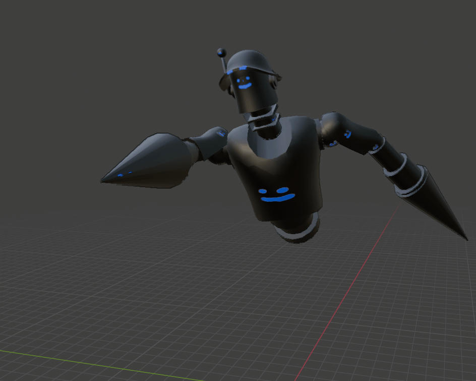
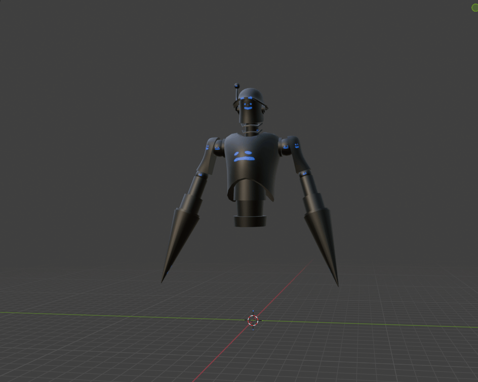
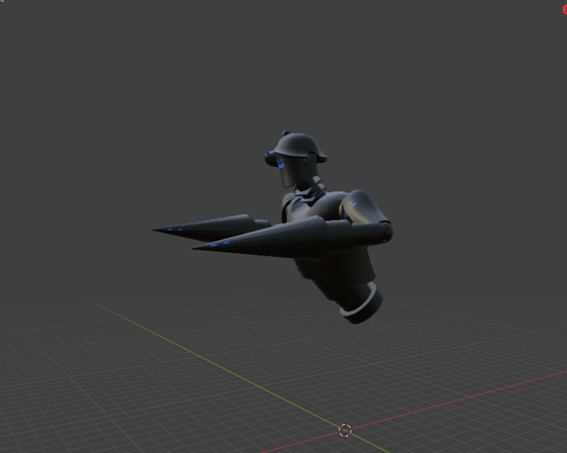
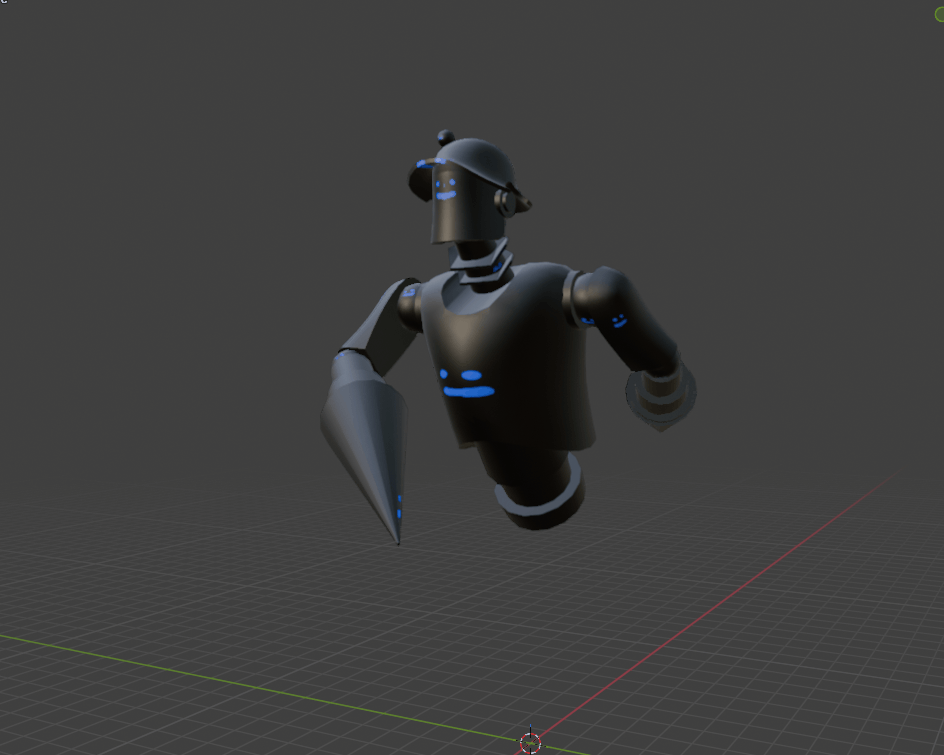

"Use resources left in the factory to save yourself from being wiped out by the evil AI. Shoot down and survive the oncoming waves or die."



Specifications:
- Engine: TGE (Custom DX11)
- Platform: PC
- My Role: Technical Art, Animation, VFX
This was the fourth group project developed in TGE, inspired by the theme and gameplay of Call of Duty: Black
Ops - Zombies. The project focuses heavily on arena-style combat with a wave-based system.
The player starts with an MP40 machine gun. By unlocking and exploring new sections of the arena, the player
gains access to upgrades and a new weapon - a quadruple-barrel gun capable of damaging multiple enemies in a
single shot. After surviving all waves and collecting the final key, the player can escape the arena, completing
the game. The game features two difficulty levels, which differ by the presence of checkpoints.
My role focused on VFX and environmental shaders. During the project, I explored a technique called raymarching,
which allowed me to create interesting volumetric effects.
In addition to environmental effects, a large part of my work was player feedback. I created effects for upgrade
machines, muzzle flashes, hit effects, and additional post-processing effects.
Lastly, I worked on rigging and animation, including enemy rigs and animations, as well as animated doors.
Since my first project in this custom engine, I have been exploring ways of creating fog and alternatives to
traditional particle systems. Depth- or height-based fog is cheap and often looks good enough; however, for
this project, with a first-person perspective, it wasn't sufficient.
My initial attempt at "volumetric" fog involved using a dense cube with many internal intersections and
projecting 2D noise in three directions. This produced a somewhat convincing volume-like effect, but due to
the high polygon density, it was not scalable.
At that point, I continued searching for a better solution and discovered raymarching.

God Rays showcase.
Dust particles showcase.
Early iteration of fog, still using multiple 2D projected noise functions.
One of my primary responsibilities was creating rigs and animations, mainly for the enemy character and
environmental objects.
All rigs and animations were created in Blender.
Enemy animations: movement1, movement2, attack1, attack2, idle, death.
Environmental animations: door open/close, garage door open/close, final gate open.




A significant portion of player feedback relied on VFX. The primary effect for both weapons was a muzzle flash
created in EmberGen, baked into flipbooks, and played back in-game.
For the shotgun, an additional spark effect was created. This effect was heavily inspired by the
SG-225IE Breaker Incendiary shotgun from Helldivers 2. Since we did not yet have a fully
developed particle system, I implemented a particle-like effect using a vertex shader (more details here).
Additional shooting feedback included hit effects on enemies, consisting of three parts:
1. Vertex shake - a quick, subtle noise applied to vertex positions of struck enemy on impact to
simulate an electrical
shock.
2. Electric shock - a pixel shader effect using a panning and modified Minkowski variant of Voronoi
noise.
3. Sparks - similar to the shotgun sparks, spawned at the hit location.
3rd and 4th videos do not represent final iteration of the effect.